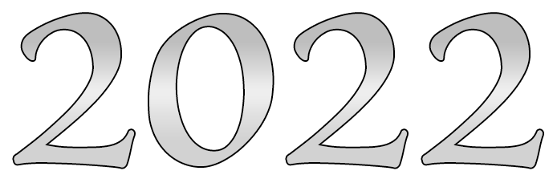

- Первое погружение в сферу арбитража трафика
- Прошел обучение у Артемия Сибирского и практику у Владимира Давыдова CEO Gorgona Media
- Первые полноценные запуски в нутре (~6 мес), освоил базовую аналитику и работу с трекерами

Меня зовут Данил, мне 25 лет
Проживаю в IT–столице России — г. Таганрог
Рассматриваю удалённый график работы,
но к релокейту тоже готов
Мой путь медиабайера начался с 2022 года.
За плечами — solo‑запуски, мини‑команда, работа в крупной структуре,
рост с junior до media buyer за 4 месяца. Работа с большим потоком каналов и бюджетами 2-3k$ daily. Запускал кампании в разных вертикалях, тестировал десятки гипотез, постоянно прокачивал навыки.
🚀 Хочу быть в команде, где раскрываются идеи, а не только задачи.
Где вместе можно вырасти в большее, чем каждый по отдельности.
«Великие дела в бизнесе никогда не совершаются одним человеком.
Их совершает команда людей.» — © Steve Jobs
Soft skills
Комба Quas+Wex: кризис‑менеджмент ролику/крео → стабильный CPA за 36 часов
Комба Wex+Exort: быстрые тесты → чтение метрик → решение без «метаний»
Комба Quas+Exort: межкомандная фича → договорённости → результат в метриках